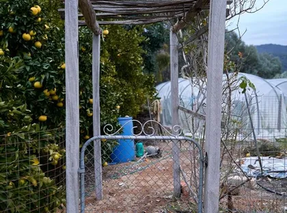

- Home
- Contact
Come and say hello.

Open for volunteering Tue and Sat, 10 to 4
Bus 42 stops at the gate · 8 minutes from Chorlton tram stop
Good to know
Questions we often hear
Do I need experience?
None at all. We teach as we go, and there is always a grower on site who is happy to explain things twice.
Can I bring my children?
Yes. Under-12s need a grown-up with them. Little Sprouts on Saturday mornings is designed for children aged 4 to 11.
Is the farm accessible?
The main paths are step-free and a raised-bed area is designed for wheelchair users. Accessible toilets are in the kitchen building.
What should I wear?
Old clothes, sturdy shoes and a layer you can take off. We supply gloves, tools, tea and biscuits.
Can my company volunteer?
Absolutely. We host corporate groups on weekdays. Use the form and say how many of you there are.